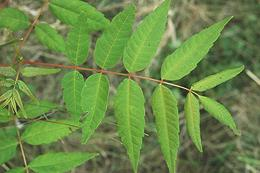

This tree ranges from Nepal on the northwest to Indonesia in the southeast and is cultivated as a vegetable, particularly in China. The roots, bark and fruit are used in traditional Chinese medicine. The flavor of young shoots reminds somewhat of onion but much less pungent. Varieties where the young leaves are red are considered to have better flavor than if they are green. This is a relatively cold tolerant mahogany and is farmed to some extent even in Canada.
These aromatic shoots are used in stir fries, salads and particularly with eggs. Fresh are preferred but are very seasonal (March, April). Since they are so popular they are now being grown in China in greenhouses and plastic tunnels for year round availability. The photo specimen, purchased from an Asian market in Los Angeles, was preserved with salt, the form normally sold here. It was 9 inches long and weighed 1-3/8 ounces.
More on Mahogany
 The photo to the left shows a mature leaf stem, and an immature (edible) one at its base. The stem in this photo is considered unusual because it has a terminal leaflet - most stems have a pair of leaflets at the end. Photo by Doronenko distributed under license Creative Commons Attribution v2.5 Generic.